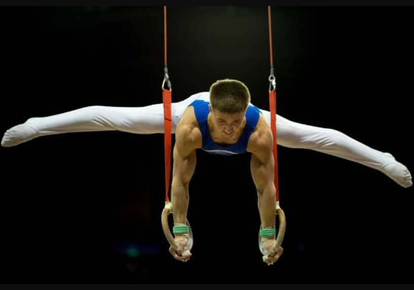
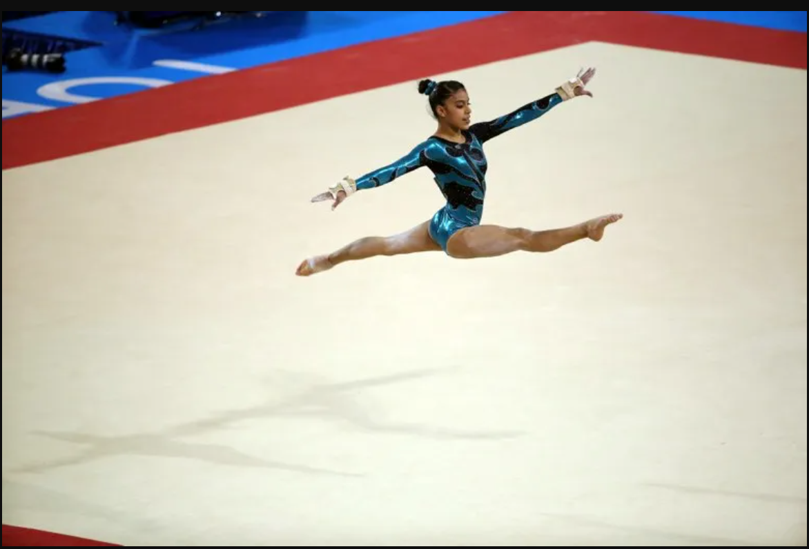
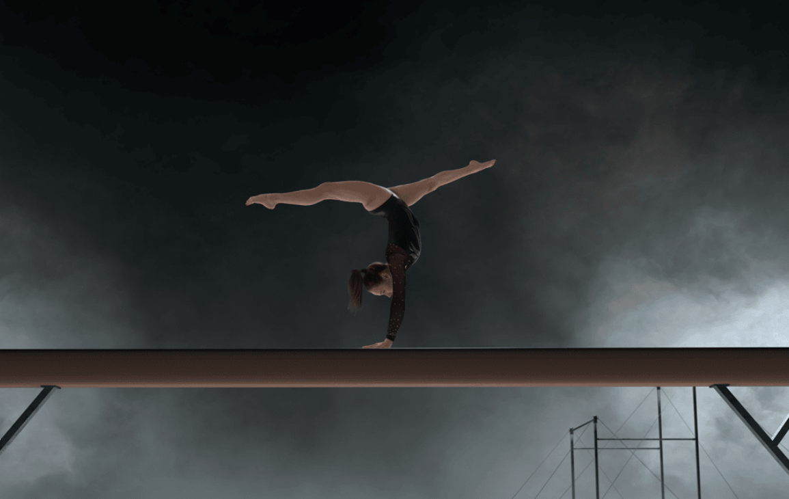

PRESENTATION DE CE SPORT
La gymnastique artistique est une discipline sportive qui combine force, souplesse, équilibre et coordination. Elle se pratique sur différents agrès comme le sol, les barres asymétriques, la poutre et le saut pour les filles, et le sol, les anneaux, la barre fixe, les barres parallèles, le cheval d'arçons et le saut pour les garçons. Les gymnastes réalisent des enchaînements de mouvements acrobatiques, de figures et de poses, souvent accompagnés de musique. C’est un sport qui demande beaucoup d’entraînement et de technique.
Les anneaux

Les anneaux sont un agrès de gymnastique masculine composé de deux anneaux suspendus à des sangles. Le gymnaste doit réaliser des figures de force, de tenue et de contrôle en suspendant son corps aux anneaux, souvent en position statique, comme des croix ou des levées de jambes. C’est une épreuve très exigeante qui demande une force musculaire exceptionnelle, une grande stabilité et une maîtrise parfaite du corps
Les barres asymetriques

Les barres asymétriques sont un appareil utilisé en gymnastique artistique féminine. Il s'agit de deux barres parallèles mais placées à des hauteurs différentes, d'où le nom "asymétriques". La gymnaste réalise des mouvements de balancement, de rotations et de transitions entre les deux barres, en utilisant principalement ses bras et son haut du corps. C’est une épreuve qui demande beaucoup de force, d’agilité et de coordination.
La barre fixe

La barre fixe est un agrès de gymnastique masculine où le gymnaste effectue une série de mouvements en se suspendant à une barre horizontale unique. Il réalise des balancements, des rotations, des prises et des figures acrobatiques, souvent en se propulsant autour de la barre. Cette épreuve demande beaucoup de force, d’agilité, de coordination et de maîtrise technique pour enchaîner les éléments avec fluidité et précision. C’est un exercice spectaculaire qui met en valeur la puissance et l’adresse du gymnaste.
les barres parallèles

Les barres parallèles sont un agrès de gymnastique masculine composé de deux barres horizontales parallèles, sur lesquelles le gymnaste réalise une série de mouvements de balancement, de soutien, de saut et de transition entre les barres. Cette épreuve demande beaucoup de force, d’agilité, de coordination et de précision pour enchaîner les figures avec fluidité et contrôle. C’est un exercice spectaculaire qui met en valeur la technique et la puissance du gymnaste.
Le cheval d'arçons

Le cheval d'arçons est un agrès utilisé en gymnastique masculine. Il s'agit d'un appareil avec un corps en forme de cheval recouvert de cuir, surmonté de deux poignées (appelées arçons) sur lesquelles le gymnaste s’appuie pour effectuer des mouvements. L’épreuve consiste à réaliser une série de figures de force, d’équilibre et de rotation autour du cheval, en utilisant principalement la puissance des bras et du haut du corps. C’est une discipline très exigeante qui demande beaucoup de force, de coordination et de contrôle.
Le saut de cheval

Le saut de cheval est une épreuve de gymnastique artistique où le gymnaste court vers un cheval d’arçons (un appareil ressemblant à un cheval avec des poignées), prend appui dessus avec ses mains, puis effectue un saut acrobatique en l’air avant d’atterrir sur un tapis. C’est un mouvement qui demande beaucoup de puissance, de rapidité et de précision pour bien s’élancer, passer au-dessus de l’appareil et atterrir en équilibre. C’est souvent une des épreuves les plus spectaculaires à regarder !
Le sol

Le sol est une épreuve de gymnastique artistique où la gymnaste réalise une chorégraphie composée de mouvements acrobatiques, de sauts, de pirouettes et de figures de danse, le tout sur une surface au sol spécialement aménagée pour absorber les chocs. Cette épreuve combine force, souplesse, rythme et expression artistique, souvent accompagnée de musique. C’est un moment où la gymnaste peut montrer à la fois sa technique et son style. Le sol en gymnastique masculine est une épreuve où les gymnastes exécutent une série de mouvements acrobatiques très puissants et dynamiques, comme des sauts périlleux, des flips, des roulades, ainsi que des éléments de force et d’équilibre. Contrairement à la gymnastique féminine, il y a moins d’accent sur la chorégraphie et la danse, et plus sur la puissance, la technique et la maîtrise des figures acrobatiques. C’est une épreuve spectaculaire qui demande beaucoup de force, de contrôle et d’endurance.
La poutre

La poutre est un agrès très fin sur lequel la gymnaste réalise une série de mouvements comme des équilibres, des sauts, des pirouettes et des acrobaties. Elle mesure environ 10 cm de large, ce qui demande une grande concentration, un bon équilibre et beaucoup de maîtrise. C’est une épreuve qui met en valeur la précision et la grâce de la gymnaste.